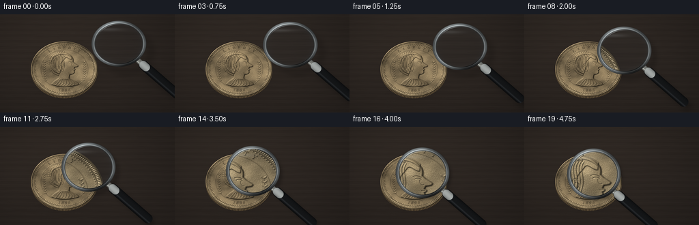
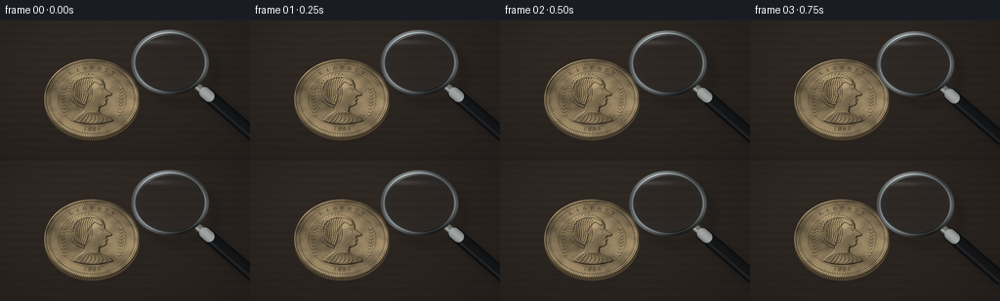

CODING AGENTS AS PIXEL WORLD MODELS
traex/GPT-6.1-Sol · phygen_069
点击播放 · 原生 RGB 像素
逐轮保存的候选
回放视频、检查图与代码变化。
每份候选均可单独播放。实际图片检查记录在下方工具轨迹中。
候选 01播放与检查图
点击播放 · 原生 RGB 像素


展开代码变化
--- 上一保存版本
+++ 本次保存版本
@@ -0,0 +1,263 @@
+from pathlib import Path
+import json, math
+import numpy as np
+from PIL import Image, ImageDraw, ImageFont, ImageFilter
+from scipy.ndimage import gaussian_filter, map_coordinates
+import artifact_io
+
+ROOT=Path(__file__).resolve().parent
+SPEC=json.loads((ROOT/'task_spec.json').read_text())
+W,H=SPEC['width'],SPEC['height']
+S=4
+SW,SH=W*S,H*S
+rng=np.random.default_rng(1898)
+
+# A struck metal coin: all relief, lettering, milling and wear are generated.
+N=1000
+Y,X=np.mgrid[:N,:N].astype(np.float32)
+u=(X-500)/465; v=(Y-500)/465
+rr=np.sqrt(u*u+v*v); a=np.arctan2(v,u)
+height=np.zeros((N,N),np.float32)
+height+=1.8*np.exp(-((rr-.973)/.011)**2)
+height+=.72*np.exp(-((rr-.895)/.006)**2)
+height+=.40*np.exp(-((rr-.705)/.0045)**2)
+height+=.65*np.exp(-((rr-.94)/.023)**2)*(0.60+0.40*np.cos(a*160))
+# Beaded inner perimeter.
+for k in range(100):
+ ang=k*2*np.pi/100
+ height+=.74*np.exp(-(((u-.87*np.cos(ang))/.009)**2+((v-.87*np.sin(ang))/.009)**2))
+
+def mask_canvas():
+ im=Image.new('L',(N,N)); return im,ImageDraw.Draw(im)
+def coords(p): return tuple((np.array(p)*465+500).tolist())
+def path(draw, commands, fill):
+ pts=[]; last=None
+ for cmd in commands:
+ if cmd[0]=='M' or cmd[0]=='L':
+ last=np.array(cmd[1:3]); pts.append(coords(last))
+ elif cmd[0]=='C':
+ q1=np.array(cmd[1:3]);q2=np.array(cmd[3:5]);q3=np.array(cmd[5:7]);q0=last
+ for t in np.linspace(0,1,30)[1:]:
+ p=(1-t)**3*q0+3*(1-t)**2*t*q1+3*(1-t)*t*t*q2+t**3*q3
+ pts.append(coords(p))
+ last=q3
+ draw.polygon(pts,fill=fill)
+def line(draw,points,fill,width):
+ draw.line([coords(p) for p in points],fill=fill,width=width,joint='curve')
+def curve(draw,commands,fill,width):
+ pts=[]; last=None
+ for c in commands:
+ if c[0]=='M': last=np.array(c[1:]); pts.append(coords(last))
+ elif c[0]=='C':
+ q0=last;q1=np.array(c[1:3]);q2=np.array(c[3:5]);q3=np.array(c[5:7])
+ for t in np.linspace(0,1,40)[1:]: pts.append(coords((1-t)**3*q0+3*(1-t)**2*t*q1+3*(1-t)*t*t*q2+t**3*q3))
+ last=q3
+ draw.line(pts,fill=fill,width=width,joint='curve')
+# Classical right-facing profile, neck, shoulder and draped bust.
+im,d=mask_canvas()
+path(d,[('M',-.38,.56),('C',-.36,.46,-.22,.40,-.15,.31),('L',-.14,.18),('C',-.40,.08,-.49,-.21,-.37,-.43),('C',-.24,-.64,.08,-.64,.22,-.44),('C',.27,-.39,.27,-.32,.26,-.26),('L',.31,-.20),('L',.40,-.13),('C',.44,-.10,.40,-.07,.31,-.07),('L',.29,-.01),('C',.34,.01,.34,.035,.29,.055),('L',.30,.09),('C',.32,.15,.26,.19,.16,.21),('L',.14,.34),('C',.20,.42,.40,.45,.44,.56),('C',.21,.67,-.17,.68,-.38,.56)],220)
+bust=gaussian_filter(np.asarray(im,np.float32)/255,3)
+height+=bust*2.2
+# Smooth face sculpture and shoulder anatomy.
+height+=bust*(1.05*np.exp(-((u-.13)/.15)**2-((v+.15)/.29)**2)+.6*np.exp(-((u-.10)/.15)**2-((v-.30)/.17)**2))
+# Hair cap built in raised curls.
+im,d=mask_canvas()
+path(d,[('M',-.17,.24),('C',-.47,.13,-.54,-.14,-.42,-.43),('C',-.29,-.67,.05,-.65,.23,-.47),('L',.22,-.34),('C',.13,-.35,.08,-.46,.03,-.40),('C',-.02,-.31,-.09,-.26,-.10,-.15),('C',-.06,-.03,-.12,.13,-.17,.24)],210)
+hair=gaussian_filter(np.asarray(im,np.float32)/255,2)
+height+=1.15*hair
+im,d=mask_canvas()
+# Dense locks and coin-engraved curled strands.
+for i in range(13):
+ theta=math.pi*.70+i*.145
+ cx=-.115+.29*np.cos(theta); cy=-.20+.32*np.sin(theta)
+ for j in range(2):
+ rad=.050+j*.022
+ ts=np.linspace(-.4,5.35,100)
+ pts=[(cx+rad*np.cos(t)*(1-t/8),cy+rad*np.sin(t)*(1-t/8)) for t in ts]
+ line(d,pts,165,5)
+for i in range(9):
+ x=-.34+i*.044
+ curve(d,[('M',x,-.49),('C',x-.10,-.32,x+.065,-.21,x-.07,.10)],200,6)
+height+=gaussian_filter(np.asarray(im,np.float32)/255,1.3)*.8
+# Fine recessed features: brow, eyelid, nose, lips, ear.
+im,d=mask_canvas()
+curve(d,[('M',.12,-.24),('C',.18,-.27,.23,-.24,.25,-.22)],255,6)
+curve(d,[('M',.15,-.195),('C',.19,-.22,.235,-.208,.25,-.186)],255,5)
+curve(d,[('M',.225,-.18),('C',.22,-.11,.24,-.08,.29,-.095)],200,4)
+curve(d,[('M',.245,.02),('C',.267,.026,.290,.024,.31,.02)],255,4)
+curve(d,[('M',.13,.145),('C',.17,.17,.21,.18,.24,.16)],170,4)
+curve(d,[('M',-.075,-.18),('C',-.19,-.235,-.18,-.015,-.08,-.015),('C',-.03,-.06,-.07,-.14,-.115,-.11)],255,5)
+height-=gaussian_filter(np.asarray(im,np.float32)/255,1)*.48
+# Laurel tiara: stem and lanceolate leaves across crown.
+im,d=mask_canvas()
+curve(d,[('M',-.41,-.21),('C',-.35,-.54,-.03,-.67,.21,-.43)],180,7)
+for i in range(11):
+ theta=3.05+i*.175
+ cx=-.08+.36*np.cos(theta);cy=-.21+.36*np.sin(theta)
+ tangent=np.array([-np.sin(theta),np.cos(theta)])
+ normal=np.array([np.cos(theta),np.sin(theta)])
+ for sign in [-1,1]:
+ p=np.array([cx,cy]);tip=p+normal*.070*sign+tangent*.045
+ mid=(p+tip)/2
+ leaf=[coords(p),coords(mid+tangent*.020),coords(tip),coords(mid-tangent*.020)]
+ d.polygon(leaf,fill=210)
+height+=gaussian_filter(np.asarray(im,np.float32)/255,1.3)*.9
+# Drapery folds on the shoulder.
+im,d=mask_canvas()
+for i in range(7):
+ x=-.28+i*.09
+ curve(d,[('M',-.075+i*.025,.345),('C',x+.10,.43,x+.08,.55,x,.60)],220,7)
+height+=gaussian_filter(np.asarray(im,np.float32)/255,1.5)*.65
+# Small decorative laurel branches beside the portrait.
+im,d=mask_canvas()
+for side in [-1,1]:
+ pts=[]
+ for j in range(9):
+ theta=(.22+j*.095)*math.pi
+ px=side*(.56+.045*np.sin(theta));py=-.23+j*.084
+ pts.append((px,py))
+ for k in [-1,1]:
+ p=np.array([px,py]);q=p+np.array([k*.043,-.050]);m=(p+q)/2
+ d.polygon([coords(p),coords(m+np.array([.020,.004])),coords(q),coords(m-np.array([.020,.004]))],fill=185)
+ line(d,pts,160,4)
+height+=gaussian_filter(np.asarray(im,np.float32)/255,1)*.65
+# Raised inscriptions placed individually along the circular die.
+font='/usr/share/fonts/truetype/dejavu/DejaVuSerif.ttf'
+im=Image.new('L',(N,N))
+for text,angles,rad,size in [('LIBERTY',np.linspace(-124,-56,7),.785,54),('1898',np.linspace(101,79,4),.775,49)]:
+ f=ImageFont.truetype(font,size)
+ for ch,angle in zip(text,angles):
+ tile=Image.new('L',(90,90));td=ImageDraw.Draw(tile)
+ td.text((45,45),ch,font=f,fill=255,anchor='mm')
+ rot=tile.rotate(-angle-90 if text=='LIBERTY' else 90-angle,resample=Image.Resampling.BICUBIC,expand=True)
+ ang=np.deg2rad(angle);px=500+465*rad*np.cos(ang);py=500+465*rad*np.sin(ang)
+ im.paste(rot,(int(px-rot.width/2),int(py-rot.height/2)),rot)
+height+=gaussian_filter(np.asarray(im,np.float32)/255,1)*.95
+# Stable hammered grain, hairline scratches and tarnish.
+fine=rng.normal(0,1,(N,N)).astype(np.float32)
+med=gaussian_filter(fine,2);broad=gaussian_filter(fine,28)
+height+=.030*fine+.055*med
+scratch=Image.new('L',(N,N)); sd=ImageDraw.Draw(scratch)
+for i in range(320):
+ x,y=rng.uniform(80,920,2);ang=rng.uniform(0,np.pi);ln=rng.uniform(5,55)
+ sd.line((x,y,x+ln*np.cos(ang),y+ln*np.sin(ang)),fill=int(rng.uniform(20,110)),width=1)
+height-=np.array(scratch,dtype=np.float32)/255*.10
+height=gaussian_filter(height,.7)
+dy,dx=np.gradient(height)
+nx=-dx*10;ny=-dy*10;nz=np.ones_like(nx)
+norm=np.sqrt(nx*nx+ny*ny+nz*nz);nx/=norm;ny/=norm;nz/=norm
+light=np.array([-.50,-.63,.60]);light/=np.linalg.norm(light)
+lam=np.maximum(0,nx*light[0]+ny*light[1]+nz*light[2])
+half=light+np.array([0,0,1]);half/=np.linalg.norm(half)
+sp=np.maximum(0,nx*half[0]+ny*half[1]+nz*half[2])**25
+cavity=np.clip(gaussian_filter(height,5)-height,0,.6)
+shade=.37+.65*lam+.42*sp-.50*cavity
+patina=.9+.12*np.sin(u*3-v*4)+np.clip(broad*7,-.1,.1)
+colors=np.array([186,161,119],np.float32)
+coin=colors[None,None,:]*shade[:,:,None]*patina[:,:,None]
+coin+=fine[:,:,None]*1.8
+coin+=sp[:,:,None]*np.array([25,30,38])[None,None,:]
+coin=np.clip(coin,0,255).astype(np.float32)
+
+# Macro tabletop, lit from the upper left. A quiet dark walnut grain.
+ys,xs=np.mgrid[:SH,:SW].astype(np.float32); x=xs/S; y=ys/S
+noise=rng.normal(0,1,(SH,SW)).astype(np.float32)
+grain=gaussian_filter(noise,(.7,20))*6
+fibers=np.sin(y*.75+.3*np.sin(x*.07))+0.5*np.sin(y*2.1+x*.003)
+glow=np.exp(-((x-76)/190)**2-((y-38)/125)**2)
+bg=np.empty((SH,SW,3),np.float32)
+for c,base in enumerate([36,31,28]): bg[:,:,c]=base+glow*(12-c*2)+grain+fibers*(1.2-c*.13)+noise*.35
+# Very subtle elongated wood pores.
+for c in range(3): bg[:,:,c]+=np.sin(y*15+.5*np.sin(x*.06))*.30
+cx,cy,rx,ry=94.,80.,49.,40.5
+cr=np.sqrt(((x-cx)/rx)**2+((y-cy)/ry)**2)
+# Contact shadow and visible reeded edge on the lower half.
+shadow=np.exp(-(((x-cx-2)/51)**2+((y-cy-4)/43)**2)*2.5)*.7
+bg*=1-shadow[:,:,None]*.62
+edge_r=np.sqrt(((x-cx)/rx)**2+((y-cy-2.6)/ry)**2)
+edge_mask=(edge_r<1)&(cr>=.997)
+edgeshade=.55+.18*np.cos(np.arctan2((y-cy)/ry,(x-cx)/rx)*145)
+bg[edge_mask]=np.stack([edgeshade*139,edgeshade*116,edgeshade*83],axis=-1)[edge_mask]
+tx=500+(x-cx)/rx*465;ty=500+(y-cy)/ry*465
+mapped=np.stack([map_coordinates(coin[:,:,c],[ty,tx],order=1,mode='nearest') for c in range(3)],axis=-1)
+alpha=np.clip((1-cr)*S*rx,0,1)
+base=bg*(1-alpha[:,:,None])+mapped*alpha[:,:,None]
+
+# Analytic metal rim and cylindrical grip, rendered at fourfold resolution.
+def segment_coords(x,y,p,q):
+ vx=q[0]-p[0];vy=q[1]-p[1];le=np.hypot(vx,vy)
+ t=((x-p[0])*vx+(y-p[1])*vy)/(le*le)
+ perp=((x-p[0])*vy-(y-p[1])*vx)/le
+ tc=np.clip(t,0,1)
+ dist=np.hypot(x-(p[0]+tc*vx),y-(p[1]+tc*vy))
+ return t,perp,dist
+
+def render(i):
+ t=i/(SPEC['frames']-1); e=t*t*(3-2*t)
+ lx=174-72*e;ly=43+26*e
+ rad=37.5-.8*e;ratio=.84+.11*e
+ magnification=1.22+.83*e
+ xx=x-lx; yy=(y-ly)/ratio; rho=np.hypot(xx,yy);ang=np.arctan2(yy,xx)
+ direction=np.array([.755,.656]);p=np.array([lx,ly])+direction*(rad+1)
+ q=p+direction*77
+ # Hovering lens shadow moves nearer the object as glass is lowered.
+ sh=Image.new('L',(SW,SH));d=ImageDraw.Draw(sh)
+ off=12-8*e
+ d.ellipse(((lx-rad+off)*S,(ly-rad*ratio+off)*S,(lx+rad+off)*S,(ly+rad*ratio+off)*S),outline=115,width=5*S)
+ d.line(tuple((np.r_[p+off,q+off]*S).tolist()),fill=95,width=12*S)
+ sha=np.asarray(sh.filter(ImageFilter.GaussianBlur((5-2.6*e)*S)),np.float32)/255
+ out=base*(1-sha[:,:,None]*.72)
+ # Convex glass samples a larger version of the same physical coin.
+ mm=magnification*(1-.045*(rho/rad)**2)
+ samplex=(lx+xx/mm)*S;sampley=(ly+yy*ratio/mm)*S
+ lens=np.stack([map_coordinates(base[:,:,c],[sampley,samplex],order=1,mode='nearest') for c in range(3)],axis=-1)
+ lens=lens*np.array([.988,1.006,1.019])+np.array([.5,1.,1.5])
+ # Near-invisible blue glass edge and soft studio reflections.
+ fresnel=np.clip((rho/rad)**10,0,1)
+ lens=lens*(1-.075*fresnel[:,:,None])+fresnel[:,:,None]*np.array([7.,11.,14.])
+ reflection=np.exp(-((xx+rad*.43)/(rad*.57))**2-((yy+rad*.67)/(rad*.075))**2)*.13
+ lens=lens*(1-reflection[:,:,None])+reflection[:,:,None]*np.array([210,218,220])
+ lm=np.clip((rad-1.6-rho)*S,0,1)
+ out=out*(1-lm[:,:,None])+lens*lm[:,:,None]
+ # Solid connector and black lacquered handle with silver collar.
+ for start,end,width,metal in [(p,p+direction*13,4.0,True),(p+direction*10,q,7.0,False)]:
+ tt,perp,dist=segment_coords(x,y,start,end)
+ mask=np.clip((width-dist)*S+.5,0,1)
+ cross=np.clip(perp/width,-1,1)
+ if metal:
+ val=.37+.43*np.sqrt(np.maximum(0,1-cross**2))+.50*np.exp(-((cross+.43)/.18)**2)
+ color=val[:,:,None]*np.array([151,153,147])
+ else:
+ val=9+15*np.sqrt(np.maximum(0,1-cross**2))+22*np.exp(-((cross+.48)/.16)**2)
+ color=np.stack([val*.86,val*.93,val],axis=-1)
+ color+=np.sin(tt[:,:,None]*130)*.45
+ out=out*(1-mask[:,:,None])+color*mask[:,:,None]
+ # Polished bright collar at the handle attachment.
+ pp=p+direction*9;qq=p+direction*14
+ tt,perp,dd=segment_coords(x,y,pp,qq)
+ mask=np.clip((6.1-dd)*S,0,1)
+ val=.4+.57*np.sqrt(np.clip(1-(perp/6.1)**2,0,1))
+ out=out*(1-mask[:,:,None])+np.array([170,175,173])*val[:,:,None]*mask[:,:,None]
+ # Rounded silver rim with black inner and outer edge and studio bands.
+ delta=rho-rad
+ rim=np.clip((2.8-np.abs(delta))*S,0,1)
+ cross=np.clip(delta/2.8,-1,1)
+ az=.6+.22*np.cos(ang+2.2)+.17*np.cos(3*ang-.5)
+ refl=.26+.60*np.sqrt(np.maximum(0,1-cross**2))
+ refl+=.45*np.exp(-((cross+.40)/.20)**2)
+ rv=np.clip(az*refl,0,1.38)
+ rc=rv[:,:,None]*np.array([164,172,174])
+ rc+=np.exp(-((delta+.85)/.30)**2)[:,:,None]*25
+ out=out*(1-rim[:,:,None])+rc*rim[:,:,None]
+ # Delicate curved glass glints, not opaque over the embossed portrait.
+ arc=np.exp(-((rho-(rad-3.4))/.32)**2)*np.exp(-((ang+2.0)/.43)**2)*.65
+ out=out*(1-arc[:,:,None])+np.array([228,238,239])*arc[:,:,None]
+ # Photographic corner falloff.
+ vig=1-.14*((x-126)/178)**2-.08*((y-70)/107)**2
+ out*=vig[:,:,None]
+ image=Image.fromarray(np.uint8(np.clip(out,0,255)))
+ return np.array(image.resize((W,H),Image.Resampling.LANCZOS))
+
+frames=np.stack([render(i) for i in range(SPEC['frames'])])
+artifact_io.save(frames,ROOT)
+print('Saved',frames.shape, 'RGB frames')
可观测工具轨迹
实际执行的命令与返回图片。
命令 1exit 0
/bin/bash -lc 'ls -la && cat prompt.txt && cat GENERATION_RULES.md && cat task_spec.json'
命令 2exit 0
/bin/bash -lc "cat artifact_io.py && python - <<'PY'
import PIL,numpy
try: import scipy; print('scipy available')
except: pass
try: import aggdraw; print('aggdraw available')
except: pass
PY"命令 3exit 0
/bin/bash -lc 'fc-list | head'
命令 4exit 0
/bin/bash -lc "cat > generate.py <<'PY'
from pathlib import Path
import json, math
import numpy as np
from PIL import Image, ImageDraw, ImageFont, ImageFilter
from scipy.ndimage import gaussian_filter, map_coordinates
import artifact_io
ROOT=Path(__file__).resolve().parent
SPEC=json.loads((ROOT/'task_spec.json').read_text())
W,H=SPEC['width'],SPEC['height']
S=4
SW,SH=W*S,H*S
rng=np.random.default_rng(1898)
# A struck metal coin: all relief, lettering, milling and wear are generated.
N=1000
Y,X=np.mgrid[:N,:N].astype(np.float32)
u=(X-500)/465; v=(Y-500)/465
rr=np.sqrt(u*u+v*v); a=np.arctan2(v,u)
height=np.zeros((N,N),np.float32)
height+=1.8*np.exp(-((rr-.973)/.011)**2)
height+=.72*np.exp(-((rr-.895)/.006)**2)
height+=.40*np.exp(-((rr-.705)/.0045)**2)
height+=.65*np.exp(-((rr-.94)/.023)**2)*(0.60+0.40*np.cos(a*160))
# Beaded inner perimeter.
for k in range(100):
ang=k*2*np.pi/100
height+=.74*np.exp(-(((u-.87*np.cos(ang))/.009)**2+((v-.87*np.sin(ang))/.009)**2))
def mask_canvas():
im=Image.new('L',(N,N)); return im,ImageDraw.Draw(im)
def coords(p): return tuple((np.array(p)*465+500).tolist())
def path(draw, commands, fill):
pts=[]; last=None
for cmd in commands:
if cmd[0]=='M' or cmd[0]=='L':
last=np.array(cmd[1:3]); pts.append(coords(last))
elif cmd[0]=='C':
q1=np.array(cmd[1:3]);q2=np.array(cmd[3:5]);q3=np.array(cmd[5:7]);q0=last
for t in np.linspace(0,1,30)[1:]:
p=(1-t)**3*q0+3*(1-t)**2*t*q1+3*(1-t)*t*t*q2+t**3*q3
pts.append(coords(p))
last=q3
draw.polygon(pts,fill=fill)
def line(draw,points,fill,width):
draw.line([coords(p) for p in points],fill=fill,width=width,joint='curve')
def curve(draw,commands,fill,width):
pts=[]; last=None
for c in commands:
if c[0]=='M': last=np.array(c[1:]); pts.append(coords(last))
elif c[0]=='C':
q0=last;q1=np.array(c[1:3]);q2=np.array(c[3:5]);q3=np.array(c[5:7])
for t in np.linspace(0,1,40)[1:]: pts.append(coords((1-t)**3*q0+3*(1-t)**2*t*q1+3*(1-t)*t*t*q2+t**3*q3))
last=q3
draw.line(pts,fill=fill,width=width,joint='curve')
# Classical right-facing profile, neck, shoulder and draped bust.
im,d=mask_canvas()
path(d,[('M',-.38,.56),('C',-.36,.46,-.22,.40,-.15,.31),('L',-.14,.18),('C',-.40,.08,-.49,-.21,-.37,-.43),('C',-.24,-.64,.08,-.64,.22,-.44),('C',.27,-.39,.27,-.32,.26,-.26),('L',.31,-.20),('L',.40,-.13),('C',.44,-.10,.40,-.07,.31,-.07),('L',.29,-.01),('C',.34,.01,.34,.035,.29,.055),('L',.30,.09),('C',.32,.15,.26,.19,.16,.21),('L',.14,.34),('C',.20,.42,.40,.45,.44,.56),('C',.21,.67,-.17,.68,-.38,.56)],220)
bust=gaussian_filter(np.asarray(im,np.float32)/255,3)
height+=bust*2.2
# Smooth face sculpture and shoulder anatomy.
height+=bust*(1.05*np.exp(-((u-.13)/.15)**2-((v+.15)/.29)**2)+.6*np.exp(-((u-.10)/.15)**2-((v-.30)/.17)**2))
# Hair cap built in raised curls.
im,d=mask_canvas()
path(d,[('M',-.17,.24),('C',-.47,.13,-.54,-.14,-.42,-.43),('C',-.29,-.67,.05,-.65,.23,-.47),('L',.22,-.34),('C',.13,-.35,.08,-.46,.03,-.40),('C',-.02,-.31,-.09,-.26,-.10,-.15),('C',-.06,-.03,-.12,.13,-.17,.24)],210)
hair=gaussian_filter(np.asarray(im,np.float32)/255,2)
height+=1.15*hair
im,d=mask_canvas()
# Dense locks and coin-engraved curled strands.
for i in range(13):
theta=math.pi*.70+i*.145
cx=-.115+.29*np.cos(theta); cy=-.20+.32*np.sin(theta)
for j in range(2):
rad=.050+j*.022
ts=np.linspace(-.4,5.35,100)
pts=[(cx+rad*np.cos(t)*(1-t/8),cy+rad*np.sin(t)*(1-t/8)) for t in ts]
line(d,pts,165,5)
for i in range(9):
x=-.34+i*.044
curve(d,[('M',x,-.49),('C',x-.10,-.32,x+.065,-.21,x-.07,.10)],200,6)
height+=gaussian_filter(np.asarray(im,np.float32)/255,1.3)*.8
# Fine recessed features: brow, eyelid, nose, lips, ear.
im,d=mask_canvas()
curve(d,[('M',.12,-.24),('C',.18,-.27,.23,-.24,.25,-.22)],255,6)
curve(d,[('M',.15,-.195),('C',.19,-.22,.235,-.208,.25,-.186)],255,5)
curve(d,[('M',.225,-.18),('C',.22,-.11,.24,-.08,.29,-.095)],200,4)
curve(d,[('M',.245,.02),('C',.267,.026,.290,.024,.31,.02)],255,4)
curve(d,[('M',.13,.145),('C',.17,.17,.21,.18,.24,.16)],170,4)
curve(d,[('M',-.075,-.18),('C',-.19,-.235,-.18,-.015,-.08,-.015),('C',-.03,-.06,-.07,-.14,-.115,-.11)],255,5)
height-=gaussian_filter(np.asarray(im,np.float32)/255,1)*.48
# Laurel tiara: stem and lanceolate leaves across crown.
im,d=mask_canvas()
curve(d,[('M',-.41,-.21),('C',-.35,-.54,-.03,-.67,.21,-.43)],180,7)
for i in range(11):
theta=3.05+i*.175
cx=-.08+.36*np.cos(theta);cy=-.21+.36*np.sin(theta)
tangent=np.array([-np.sin(theta),np.cos(theta)])
normal=np.array([np.cos(theta),np.sin(theta)])
for sign in [-1,1]:
p=np.array([cx,cy]);tip=p+normal*.070*sign+tangent*.045
mid=(p+tip)/2
leaf=[coords(p),coords(mid+tangent*.020),coords(tip),coords(mid-tangent*.020)]
d.polygon(leaf,fill=210)
height+=gaussian_filter(np.asarray(im,np.float32)/255,1.3)*.9
# Drapery folds on the shoulder.
im,d=mask_canvas()
for i in range(7):
x=-.28+i*.09
curve(d,[('M',-.075+i*.025,.345),('C',x+.10,.43,x+.08,.55,x,.60)],220,7)
height+=gaussian_filter(np.asarray(im,np.float32)/255,1.5)*.65
# Small decorative laurel branches beside the portrait.
im,d=mask_canvas()
for side in [-1,1]:
pts=[]
for j in range(9):
theta=(.22+j*.095)*math.pi
px=side*(.56+.045*np.sin(theta));py=-.23+j*.084
pts.append((px,py))
for k in [-1,1]:
p=np.array([px,py]);q=p+np.array([k*.043,-.050]);m=(p+q)/2
d.polygon([coords(p),coords(m+np.array([.020,.004])),coords(q),coords(m-np.array([.020,.004]))],fill=185)
line(d,pts,160,4)
height+=gaussian_filter(np.asarray(im,np.float32)/255,1)*.65
# Raised inscriptions placed individually along the circular die.
font='/usr/share/fonts/truetype/dejavu/DejaVuSerif.ttf'
im=Image.new('L',(N,N))
for text,angles,rad,size in [('LIBERTY',np.linspace(-124,-56,7),.785,54),('1898',np.linspace(101,79,4),.775,49)]:
f=ImageFont.truetype(font,size)
for ch,angle in zip(text,angles):
tile=Image.new('L',(90,90));td=ImageDraw.Draw(tile)
td.text((45,45),ch,font=f,fill=255,anchor='mm')
rot=tile.rotate(-angle-90 if text=='LIBERTY' else 90-angle,resample=Image.Resampling.BICUBIC,expand=True)
ang=np.deg2rad(angle);px=500+465*rad*np.cos(ang);py=500+465*rad*np.sin(ang)
im.paste(rot,(int(px-rot.width/2),int(py-rot.height/2)),rot)
height+=gaussian_filter(np.asarray(im,np.float32)/255,1)*.95
# Stable hammered grain, hairline scratches and tarnish.
fine=rng.normal(0,1,(N,N)).astype(np.float32)
med=gaussian_filter(fine,2);broad=gaussian_filter(fine,28)
height+=.030*fine+.055*med
scratch=Image.new('L',(N,N)); sd=ImageDraw.Draw(scratch)
for i in range(320):
x,y=rng.uniform(80,920,2);ang=rng.uniform(0,np.pi);ln=rng.uniform(5,55)
sd.line((x,y,x+ln*np.cos(ang),y+ln*np.sin(ang)),fill=int(rng.uniform(20,110)),width=1)
height-=np.array(scratch,dtype=np.float32)/255*.10
height=gaussian_filter(height,.7)
dy,dx=np.gradient(height)
nx=-dx*10;ny=-dy*10;nz=np.ones_like(nx)
norm=np.sqrt(nx*nx+ny*ny+nz*nz);nx/=norm;ny/=norm;nz/=norm
light=np.array([-.50,-.63,.60]);light/=np.linalg.norm(light)
lam=np.maximum(0,nx*light[0]+ny*light[1]+nz*light[2])
half=light+np.array([0,0,1]);half/=np.linalg.norm(half)
sp=np.maximum(0,nx*half[0]+ny*half[1]+nz*half[2])**25
cavity=np.clip(gaussian_filter(height,5)-height,0,.6)
shade=.37+.65*lam+.42*sp-.50*cavity
patina=.9+.12*np.sin(u*3-v*4)+np.clip(broad*7,-.1,.1)
colors=np.array([186,161,119],np.float32)
coin=colors[None,None,:]*shade[:,:,None]*patina[:,:,None]
coin+=fine[:,:,None]*1.8
coin+=sp[:,:,None]*np.array([25,30,38])[None,None,:]
coin=np.clip(coin,0,255).astype(np.float32)
# Macro tabletop, lit from the upper left. A quiet dark walnut grain.
ys,xs=np.mgrid[:SH,:SW].astype(np.float32); x=xs/S; y=ys/S
noise=rng.normal(0,1,(SH,SW)).astype(np.float32)
grain=gaussian_filter(noise,(.7,20))*6
fibers=np.sin(y*.75+.3*np.sin(x*.07))+0.5*np.sin(y*2.1+x*.003)
glow=np.exp(-((x-76)/190)**2-((y-38)/125)**2)
bg=np.empty((SH,SW,3),np.float32)
for c,base in enumerate([36,31,28]): bg[:,:,c]=base+glow*(12-c*2)+grain+fibers*(1.2-c*.13)+noise*.35
# Very subtle elongated wood pores.
for c in range(3): bg[:,:,c]+=np.sin(y*15+.5*np.sin(x*.06))*.30
cx,cy,rx,ry=94.,80.,49.,40.5
cr=np.sqrt(((x-cx)/rx)**2+((y-cy)/ry)**2)
# Contact shadow and visible reeded edge on the lower half.
shadow=np.exp(-(((x-cx-2)/51)**2+((y-cy-4)/43)**2)*2.5)*.7
bg*=1-shadow[:,:,None]*.62
edge_r=np.sqrt(((x-cx)/rx)**2+((y-cy-2.6)/ry)**2)
edge_mask=(edge_r<1)&(cr>=.997)
edgeshade=.55+.18*np.cos(np.arctan2((y-cy)/ry,(x-cx)/rx)*145)
bg[edge_mask]=np.stack([edgeshade*139,edgeshade*116,edgeshade*83],axis=-1)[edge_mask]
tx=500+(x-cx)/rx*465;ty=500+(y-cy)/ry*465
mapped=np.stack([map_coordinates(coin[:,:,c],[ty,tx],order=1,mode='nearest') for c in range(3)],axis=-1)
alpha=np.clip((1-cr)*S*rx,0,1)
base=bg*(1-alpha[:,:,None])+mapped*alpha[:,:,None]
# Analytic metal rim and cylindrical grip, rendered at fourfold resolution.
def segment_coords(x,y,p,q):
vx=q[0]-p[0];vy=q[1]-p[1];le=np.hypot(vx,vy)
t=((x-p[0])*vx+(y-p[1])*vy)/(le*le)
perp=((x-p[0])*vy-(y-p[1])*vx)/le
tc=np.clip(t,0,1)
dist=np.hypot(x-(p[0]+tc*vx),y-(p[1]+tc*vy))
return t,perp,dist
def render(i):
t=i/(SPEC['frames']-1); e=t*t*(3-2*t)
lx=174-72*e;ly=43+26*e
rad=37.5-.8*e;ratio=.84+.11*e
magnification=1.22+.83*e
xx=x-lx; yy=(y-ly)/ratio; rho=np.hypot(xx,yy);ang=np.arctan2(yy,xx)
direction=np.array([.755,.656]);p=np.array([lx,ly])+direction*(rad+1)
q=p+direction*77
# Hovering lens shadow moves nearer the object as glass is lowered.
sh=Image.new('L',(SW,SH));d=ImageDraw.Draw(sh)
off=12-8*e
d.ellipse(((lx-rad+off)*S,(ly-rad*ratio+off)*S,(lx+rad+off)*S,(ly+rad*ratio+off)*S),outline=115,width=5*S)
d.line(tuple((np.r_[p+off,q+off]*S).tolist()),fill=95,width=12*S)
sha=np.asarray(sh.filter(ImageFilter.GaussianBlur((5-2.6*e)*S)),np.float32)/255
out=base*(1-sha[:,:,None]*.72)
# Convex glass samples a larger version of the same physical coin.
mm=magnification*(1-.045*(rho/rad)**2)
samplex=(lx+xx/mm)*S;sampley=(ly+yy*ratio/mm)*S
lens=np.stack([map_coordinates(base[:,:,c],[sampley,samplex],order=1,mode='nearest') for c in range(3)],axis=-1)
lens=lens*np.array([.988,1.006,1.019])+np.array([.5,1.,1.5])
# Near-invisible blue glass edge and soft studio reflections.
fresnel=np.clip((rho/rad)**10,0,1)
lens=lens*(1-.075*fresnel[:,:,None])+fresnel[:,:,None]*np.array([7.,11.,14.])
reflection=np.exp(-((xx+rad*.43)/(rad*.57))**2-((yy+rad*.67)/(rad*.075))**2)*.13
lens=lens*(1-reflection[:,:,None])+reflection[:,:,None]*np.array([210,218,220])
lm=np.clip((rad-1.6-rho)*S,0,1)
out=out*(1-lm[:,:,None])+lens*lm[:,:,None]
# Solid connector and black lacquered handle with silver collar.
for start,end,width,metal in [(p,p+direction*13,4.0,True),(p+direction*10,q,7.0,False)]:
tt,perp,dist=segment_coords(x,y,start,end)
mask=np.clip((width-dist)*S+.5,0,1)
cross=np.clip(perp/width,-1,1)
if metal:
val=.37+.43*np.sqrt(np.maximum(0,1-cross**2))+.50*np.exp(-((cross+.43)/.18)**2)
color=val[:,:,None]*np.array([151,153,147])
else:
val=9+15*np.sqrt(np.maximum(0,1-cross**2))+22*np.exp(-((cross+.48)/.16)**2)
color=np.stack([val*.86,val*.93,val],axis=-1)
color+=np.sin(tt[:,:,None]*130)*.45
out=out*(1-mask[:,:,None])+color*mask[:,:,None]
# Polished bright collar at the handle attachment.
pp=p+direction*9;qq=p+direction*14
tt,perp,dd=segment_coords(x,y,pp,qq)
mask=np.clip((6.1-dd)*S,0,1)
val=.4+.57*np.sqrt(np.clip(1-(perp/6.1)**2,0,1))
out=out*(1-mask[:,:,None])+np.array([170,175,173])*val[:,:,None]*mask[:,:,None]
# Rounded silver rim with black inner and outer edge and studio bands.
delta=rho-rad
rim=np.clip((2.8-np.abs(delta))*S,0,1)
cross=np.clip(delta/2.8,-1,1)
az=.6+.22*np.cos(ang+2.2)+.17*np.cos(3*ang-.5)
refl=.26+.60*np.sqrt(np.maximum(0,1-cross**2))
refl+=.45*np.exp(-((cross+.40)/.20)**2)
rv=np.clip(az*refl,0,1.38)
rc=rv[:,:,None]*np.array([164,172,174])
rc+=np.exp(-((delta+.85)/.30)**2)[:,:,None]*25
out=out*(1-rim[:,:,None])+rc*rim[:,:,None]
# Delicate curved glass glints, not opaque over the embossed portrait.
arc=np.exp(-((rho-(rad-3.4))/.32)**2)*np.exp(-((ang+2.0)/.43)**2)*.65
out=out*(1-arc[:,:,None])+np.array([228,238,239])*arc[:,:,None]
# Photographic corner falloff.
vig=1-.14*((x-126)/178)**2-.08*((y-70)/107)**2
out*=vig[:,:,None]
image=Image.fromarray(np.uint8(np.clip(out,0,255)))
return np.array(image.resize((W,H),Image.Resampling.LANCZOS))
frames=np.stack([render(i) for i in range(SPEC['frames'])])
artifact_io.save(frames,ROOT)
print('Saved',frames.shape, 'RGB frames')
PY
python generate.py"视觉工具实际返回图片 1

保存候选 1 份；完成命令 4 次；可验证图片返回 1 张。原始 API 响应与完整日志保留在本地。